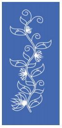
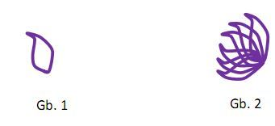
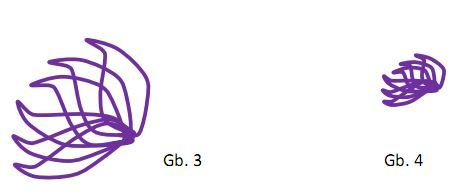
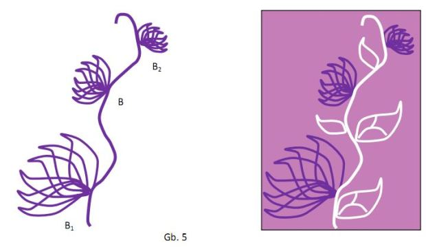

Aplikasi Dilatasi
Sama halnya dengan translasi, banyak motif batik di Indonesia yang dikreasikan dengan melakukan perbesaran motif atau dilatasi. Contohnya ada pada motif batik sasirangan kangkung kaumbakan asal Kalimantan
Perhatikan motif mirip bunga teratai pada sasirangan tersebut. Bentuk dasar dari bunga teratai tersebut adalah bangun datar (Gb. 1) yang dapat dipandang sebagai kelopak bunga teratai, kemudian melalui beberapa rotasi dan refleksi diperoleh susunan kelopak bunga membentuk teratai (Gb. 2).
Bunga teratai yang terlukis pada motif kangkung kaumbakan di atas memiliki ukuran yang berbeda-beda, dimana besar atau kecilnya ukuran bunga dapat dipandang sebagai hasil dilatasi atau perkalian dengan suatu konstanta k terhadap bentuk gambar 2 dimana k adalah bilangan riil posituf. Selanjutnya, bentuk gambar 2 disebut sebagai B.
Misalkan k1=2, maka bentuk k1B adalah perbesaran dua kali B, sebut saja hasil k1B=B1 (Gb. 3). Kemudian untuk memperoleh bentuk bunga teratai selanjutnya dengan mengambil k2=1/3, sebut saja hasil k2B=B2 (Gb.4).
Untuk mendapatkan letaknya yang artistik pada tangkai, selanjutnya B2 direfleksikan pada garis vertikal sehingga diperoleh susunan membentuk motif kangkung kaumbakan (Gb.5).
